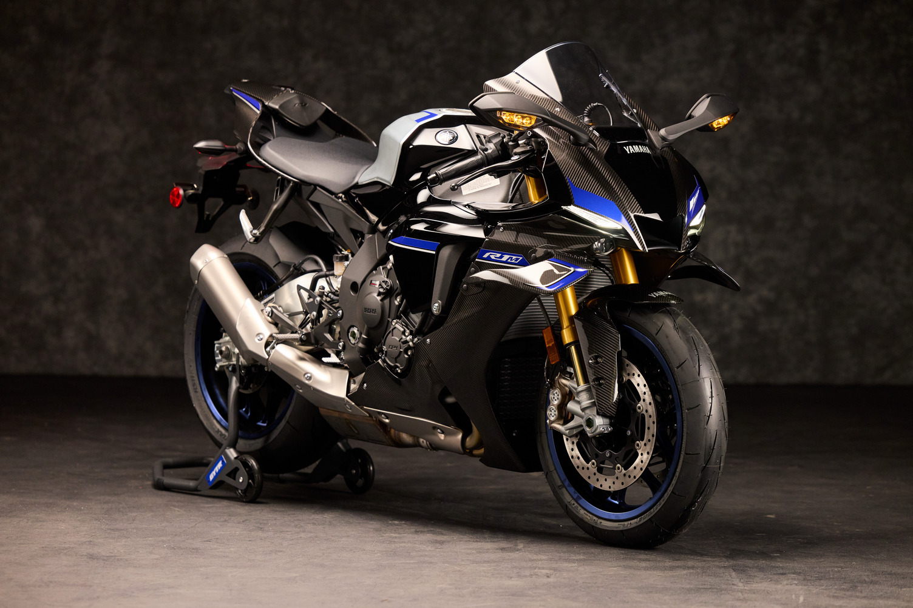
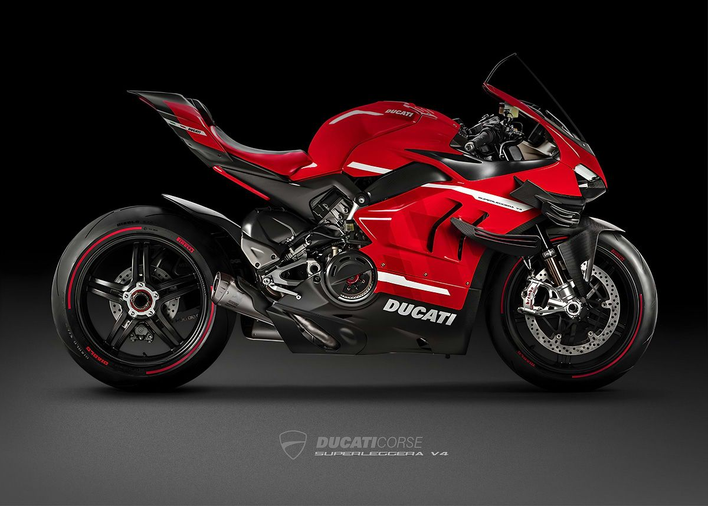

Yamaha RIM
The Yamaha R1M is a track-focused masterpiece engineered with cutting-edge MotoGP-derived technology. Featuring a lightweight carbon fiber body, advanced electronic suspension, and a high-revving crossplane engine, it delivers razor-sharp handling and explosive performance. Built for riders who demand precision, speed, and exclusivity, the R1M offers an unmatched riding experience both on and off the track.
Learn More
Yamaha-R6
The Yamaha R6 is a legendary supersport machine known for its aggressive styling and race-bred performance. Its high-revving 599cc engine, sharp handling, and aerodynamic design make it a favorite for both track enthusiasts and spirited street riders. Lightweight, responsive, and thrilling at high RPMs, the R6 remains an icon in the middleweight sportbike category.
Learn More
Ducati Superlegerra V4R
The Ducati Superleggera V4 represents the pinnacle of Italian engineering and exclusivity. Built with extensive use of carbon fiber and powered by a MotoGP-inspired V4 engine, it delivers extreme power-to-weight performance. With only a limited number produced, this bike combines breathtaking design, advanced aerodynamics, and elite track capability, making it one of the most desirable motorcycles ever created.
Learn More